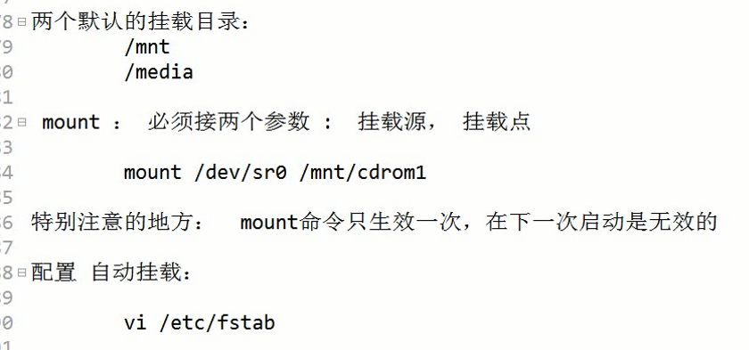
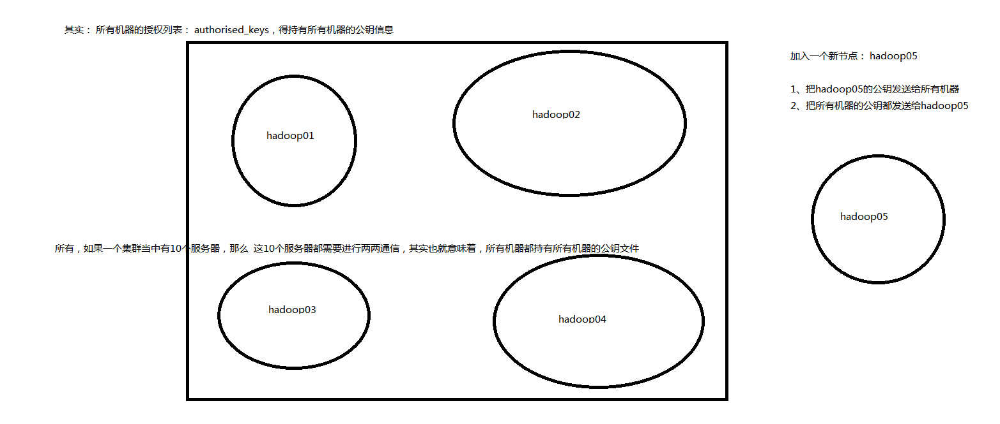

1.挂载

挂载前可以先看看虚拟机中有哪些设备 (只看光盘设备的部分), 如下图:

从上图可以看到, 当前虚拟机中只有两个光盘设备sr0和sr1, 这两个设备是我们自己在虚拟机的配置设置里给虚拟机添加的, 并使用了centos的镜像文件进行链接, 将镜像文件连接到虚拟机中作为光盘使用,如下图。上图中的绿框是一个日志文件, 而所有的蓝框的内容都是系统自动给sr0和sr1创建的快捷方式, 指向了sr0或sr1。这是为了封装底层,让底层的各类驱动看起来没有区别, 通过各种方式都能调用该设备。

而要看到sr0和sr1里面的东西, 只能通过挂载。sr0和sr1分别挂载到/mnt/目录下的cdrom1目录和cdrom2目录。挂载的命令如下:
mount -t iso9660 -o ro /dev/sr0 /mnt/cdrom1/
mount -t iso9660 -o ro /dev/sr1 /mnt/cdrom2/
并且接下来就可以看到sr0里面的具体内容了。

因为挂载命令只会生效一次,重启后就会失效,所以想要每次开机都自动挂载好, 需要配置自动挂载。配置自动挂载的写法如下(先 vim /etc/fstab): (配置自动挂载的目的主要是为了配置成本地yum源)

2、 配置本地YUM源
yum源: 本质就是一个存放了特定规范打包软件的http服务器。
yum源配置目录:/etc/yum.repos.d/
配置本地yum源可以在配置文件中写两种形式的链接,两者皆可,如下图:
推荐第一种方式 利于文件的共享


配置本地yum源的操作步骤:
1.搭建服务器
1)需要已经挂载好了镜像文件。(前面的挂载的步骤已经实现)
2)利用http服务器(httpd) ,即在/var/www/html/ 目录下创建一个文件夹centos67: mkdir /var/www/html/centos67/
3)建立软链接, 索引到镜像目录:
挂载好的镜像文件发送软链接到http服务器目录下:
ln -s /mnt/cdrom1/ /var/www/html/centos67/
ln -s /mnt/cdrom2/ /var/www/html/centos67/
执行完以上操作时可以看见如下:

启动httpd服务器后,只要在浏览器访问此网址:http://hadoop01/centos67/
即可在浏览器看到如下目录:

2.配置yum源文件
(1)找到yum源所在目录: cd /etc/yum.repos.d
(2)先把所有的系统自带的yum源屏蔽(最好不要删除,否则想恢复也恢复不了了): rename .repo .repo.bak *
(3)然后再复制一个系统自带的yum源,然后重命名为.repo结尾,这样系统就会只剩下重命名好的这唯一的一个可用的yum源(系统搜索yum源的方式是搜索以.repo结尾的文件)。待会再修改一下里面的配置信息即可(因为CentOS-Base.repo里面的配置信息太多,所以我们只复制配置信息较少CentOS-Media.repo,里面只有一项配置信息):
cp CentOS-Media.repo.bak mycentos67.repo
上面三步的执行如下图:

(4)修改mycentos67.repo:
vim mycentos67.repo

并将上图中的红框部分的内容修改成如下:
[mycentos67-id]
name=mycentos-name
baseurl=http://hadoop01/centos67/cdrom1/
gpgcheck=0
enabled=1
上面的配置信息中:
[mycentos67-id] 表示的是yum源的id,可以随意设置
name的值表示的是yum源的名字,也可以随意设置
baseurl的值表示yum源的包放在哪个目录下,file:///media/CentOS/ 这种格式是本地目录的格式,
而http://hadoop01/centos67/cdrom1/则是远程http目录的格式
gpgcheck的设置,1表示要检查, 0表示不要检查, 一般都会改成0,不过检查一下也无所谓。
enabled的设置, 0表示不启用此条yum源的配置, 1表示启用此条yum源的配置, 当然要改成1才会使配置生效
3.测试
yum repolist:查看可用yum源列表

如果还觉得yum源的包不够,有些包没有。可以把网易的yum源也导入到/etc/yum.repos.d目录下, 这样的话如果本地没有包的话也可以远程下载更新软件了,同时又不用担心用的是国外的yum源而网速太慢。网易的centos6的版本的镜像源的网址是:
http://mirrors.163.com/.help/CentOS6-Base-163.repo , 下载下来的文件名就是CentOS6-Base-163.repo。
可以在Windows里面下载, 再用sftp导入到虚拟机,然后放到/etc/yum.repos.d目录下。
也可以使用wget命令直接在Linux里面下载: wget http://mirrors.163.com/.help/CentOS6-Base-163.repo
wget命令是下载到当前目录, 所以只需要再mv到 /etc/yum.repos.d/目录下即可。
此时 yum源列表增多,可用的包也从6575增多到14448。

按照上面的方法, 其实也可以不用本地yum源而只使用国内的yum源(比如网易), 替换方法可以从上面的步骤中总结出来, 也可以参考这篇博客: https://www.cnblogs.com/xq77711/p/10695565.html
4.关于yum的其他命令:
清理旧包: yum clean all
生成新的yum源缓存: yum makecache
更新当前已安装的所有软件：yum update
3、安装软件
（1）安装二进制发布包的软件的步骤
例如：jdk的安装


（2）rpm安装（Ubuntu是没有的 这是red hat公司特有的安装方式）

（3）YUM在线安装
yum安装软件的工作原理：
1、从远程YUM源下载对应的rpm软件
2、自动调用系统的rpm进行软件安装
自定义YUM源
我们的策略：结合httpd服务，挂载iso镜像文件，然后修改yum的配置文件
（4）源码编译安装
4、进程
（1）将某个程序启动到后台执行

linux系统启动时的流程：

5.克隆虚拟机
配置好一台VMware虚拟机后：

6.搭建大数据集群：

7.SSH免密登录


在集群主机数量较少时，随便怎么配置SSH免密登录：

但若是机器数量较多时，且经常有新机器加入时，改进后的方法是：
在某台主机家目录文件夹下新建一个keys文件夹，在这个文件夹中有两个文件，一个是authorized_keys（里面存放的是所有的主机的公钥（包括他自己的公钥）），一个是key（里面只暂时存放最新加入的主机的公钥），当新的主机把该主机的公钥发送到key中时（因为会自动覆盖之前的其他主机的内容），把该主机的公钥通过命令
cat key >> authorized_keys（记住，一定要双大于号，一个大于号表示覆盖）就可以把新主机的公钥添加到authorized_keys文件中了，然后再通过命令把authorized_keys群发到所有的主机（包括该主机本身） /root/.ssh/ 目录中去即可。如下图:

以下是一种群发的方法：（通过"Send chat to all sessions"窗口）

提供一种快速建立集群ssh免密登录的方法：
（1）将所有主机的root用户的登录密码都设置成一样
（2）在SecureCRT中选择Connect in Tab，然后将所有主机在同一个窗口中打开
（3）在"Send chat to all sessions"窗口输入ssh-keygen -t rsa 来生成基于rsa非对称加密算法的一对秘钥，三次回车秘钥即可生成完毕
（4）在"Send chat to all sessions"窗口使用ssh-copy-id hadoop01命令，该命令会将所有主机的公钥发送到hadoop01的/root/.ssh/authorized_keys文件中去，并且不会覆盖之前的文件内容，也就是说hadoop01里面会存有所有主机的公钥
（5）再在窗口输入 scp -r root@hadoop01:/root/.ssh/authorized_keys /root/.ssh/authorized_keys命令，即可把所有主机的公钥文件替换成hadoop01中的公钥文件，从而以后所有主机之间传输文件都不用再输入密码
————————————————————手写与上传资料分割线—————————————————
Linux-day3复习
1、文件权限
ll命令的结果概述
drwxr-x--x
rwx的概念
rwx对于文件和目录的具体含义/操作
rwx对于文件夹的具体含义：
r ： 是否可以ls
w ： 是否可以删除，增加，修改子内容
x ： 是否可以cd进入这个文件夹
修改权限
u g o a
+ - =
r w x
rwx = 7 r-x = 5
chmod a-x file
chmod 777 file
chmod -R 755 file
修改所属关系
chown spark:spark file
chown spark file
chown :spark file
2、压缩打包
压缩 gzip / bzip2 / gunzip / gzip -d / bunzip2 -d
打包 tar -cvf / tar -xvf
重点：
tar -zxvf file -C dstSource
3、httpd服务
服务的管理： service httpd start
httpd服务的根路径： /var/www/html/
4、系统管理
挂载
mount 挂载源 挂载点
unmount 卸载
系统服务管理
service --status-all
service mysql status / start / stop / restart
设置部分服务在部分系统启动级别中设置开机启动：
chkconfig --level 34 mysql on
chkconfig --list
系统时间管理
查看时间： date cal
设置时间:
直接手动设置： date -s "2012-12-12 12:12:12" hwclock -w
从网络同步时间： ntpdate 202.120.2.101
从本地时间服务器进行同步
crontab 计划任务
定时执行
间隔执行
* * * * * 命令
分 时 日 月 周 命令
crontab -e
crontab -l
crontab -u -e 表示为某个用户指定对应的计划任务
时区 tzselect 可以生成对应时区的时区文件
时区文件的存在地： /usr/share/zoneinfo/
本地系统默认使用的时区文件： /etc/localtime
cp /usr/share/zoneinfo/Asia/Shanghai /etc/localtime
5、软件安装
二进制发布包
安装JDK
rpm软件包
安装MySQL
yum在线安装
yum安装软件的工作原理：
1、从远程YUM源下载对应的rpm软件
2、自动调用系统的rpm进行软件安装
自定义YUM源
我们的策略：结合httpd服务，挂载iso镜像文件，然后修改yum的配置文件
源码编译安装
安装Redis
6、进程管理
进程和线程的概念和区别
进程的父进程和子进程的概念
关于进程的管理的常用的命令：
ps
ps -ef
ps -aux
pstree
pstree -p
进程的切换
ctrl + c 停止进程
ctrl + z 挂起进程
fg 唤醒进程运行到前台
bg 后台
jobs 去查看当前会话挂起的进程有那些
可以直接让进程启动到后台执行：
语法： nohup 命令 &
top 查看每个进程的资源消耗情况
杀死进程
kill 直接按照pid去杀死一个进程
pidof 根据进程名称查询某个进程的进程号
pkill 直接根据进程名去杀死一个进程
jps 只是用来查看所有的jvm进程
作业：
安装JDK, 安装MySQL, 安装tomcat
发布ssm项目到tomcat中
启动tomcat中到后台运行
在win7中使用浏览器进行访问
补充：
1、克隆虚拟机
安装好了vmware软件之后 ： 快照， 克隆
快照： 备份
克隆： 复制出新的虚拟机
具体的操作方式
克隆：
1、先按照文档，按照规定的操作步骤去克隆出一个新的虚拟机
2、启动该克隆出来的虚拟机，更改对应的一些配置信息
克隆出来的虚拟机和原来的虚拟机有三个地方是重复的，
并且是必须要更改的：
1、主机名
vi /etc/sysconfig/network
2、网卡---网卡的mac地址重复
eth0
会在一个配置文件中说明，正在使用的网卡是eth0
1、如果想使用原来的eth0，需要更改mac地址
2、直接生成一块新的网卡eth1，让系统使用eth1网卡
3、IP重复
修改IP ： 三种方式
但是现在：修改配置文件
3、正常使用
学完大数据课程之后要能达到的一个基本的虚拟机软件的使用能力：
迅速搭建一个hadoop和spark集群
1、准备5台服务器
2、安装JDK，安装MySQL 知道了怎么去准备一个服务器集群
合适的方式：
1、先安装好一台服务器，安装好必要的各种软件
2、从当前这台服务器进行克隆操作
3、配置SSH免密登录
4、安装hadoop集群
5、安装Spark集群
2、配置SSH免密登录
这一个加密了的通信协议
默认的加密算法： 非对称加密算法： RSA
对称加密算法： DES
RSA加密算法的工作原理：
如果hadoop01想免密访问hadoop06：
1、hadoop01使用ssh-keygen命令生成秘钥对
2、hadoop01把生成的公钥文件内容发送到hadoop06的~/.ssh/authorized_keys
3、hadoop01发送请求给hadoop06
4、hadoop06会使用hadoop01的公钥加密一个随机字符串str1为private发送给hadoop01
5、hadoop01使用私钥去解密private为字符串str2，发送给hadoop06
6、hadoop06会验证str1和str2是否是同一个字符串。
7、如果验证成功，那么hadoop06会执行对应的操作，否则，拒绝执行该操作
远程拷贝： scp
具体使用：
scp huangbo.jpg hadoop@hadoop06:/home/hadoop/
表示 hadoop01机器的root用户把huangbo.jpg这个文件传输到
hadoop06这台机器的/home/hadoop目录中
在整个传输过程中，其实就是两个操作系统的两个用户在进行文件传输
如果没有指定对应的用户：
hadoop01 ： 执行命令的用户
hadoop06 ： 就是对应的同名用户
如果要指定： root@hadoop06
问题：
1、如果在进行远程拷贝的过程中，会提示你输入密码，那么一定是SSH配置有问题
2、如果hadoop01自己给自己传送一个文件，要不要输入密码？ 不用cp 而是用scp
SSH免密登录协议连自己配置
整个集群当中的任意两台服务器都需要进行配置
RSA : 非对称加密
.md5 校验文件是否完整
.sha
.sha1
摘要信息生成算法